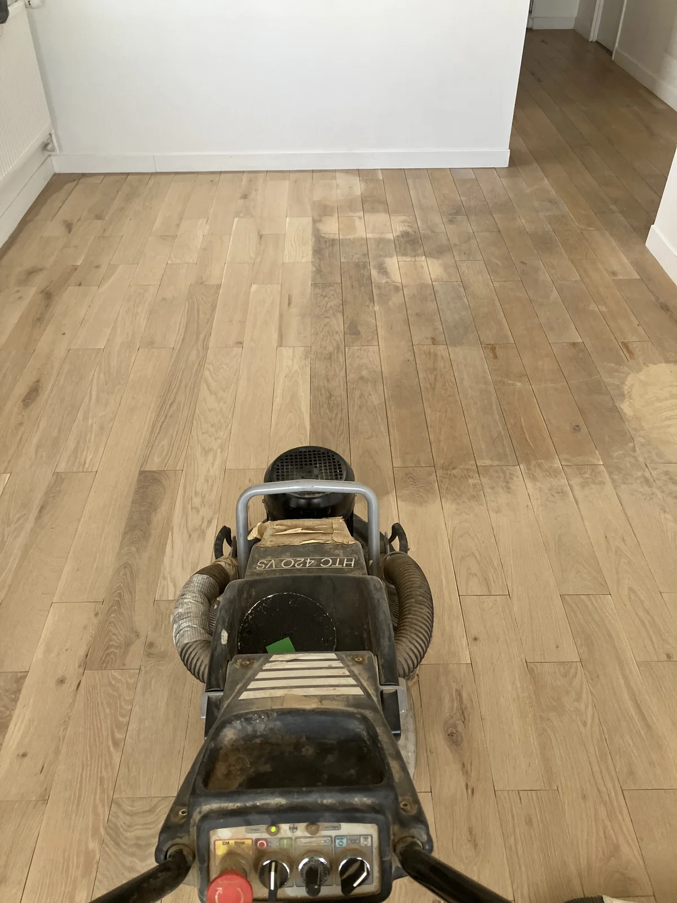
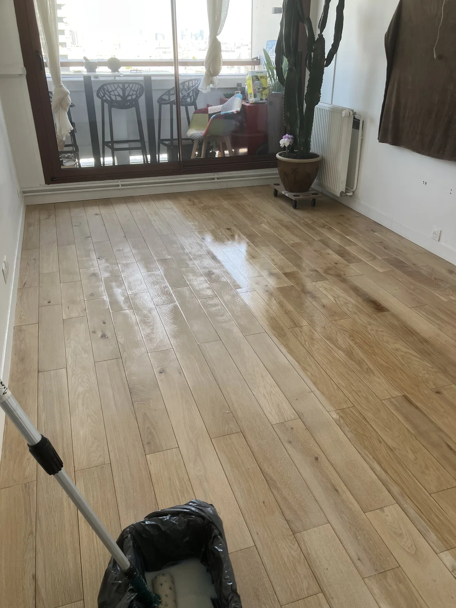
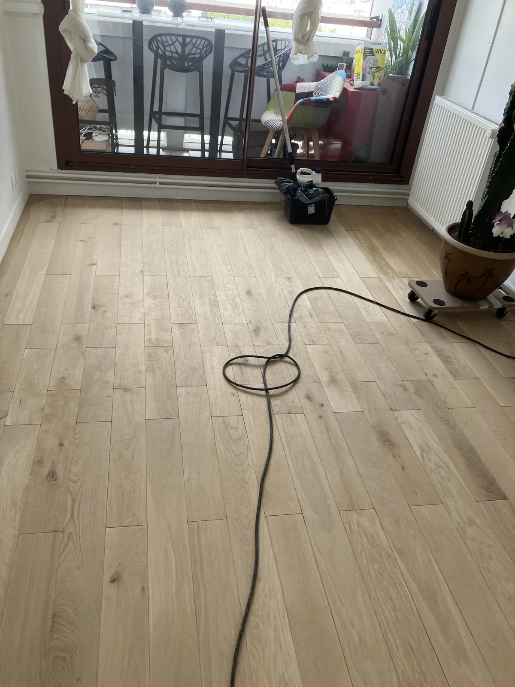
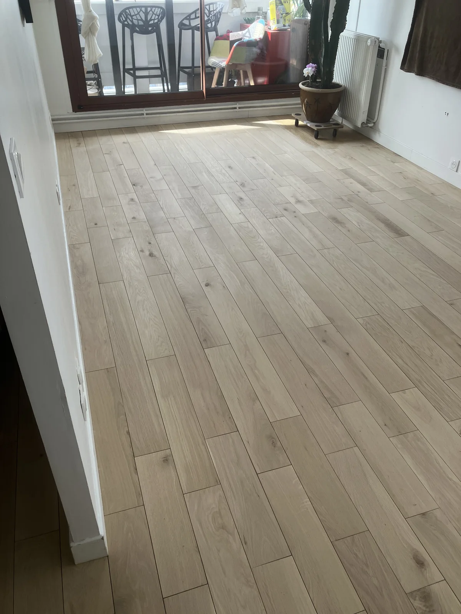
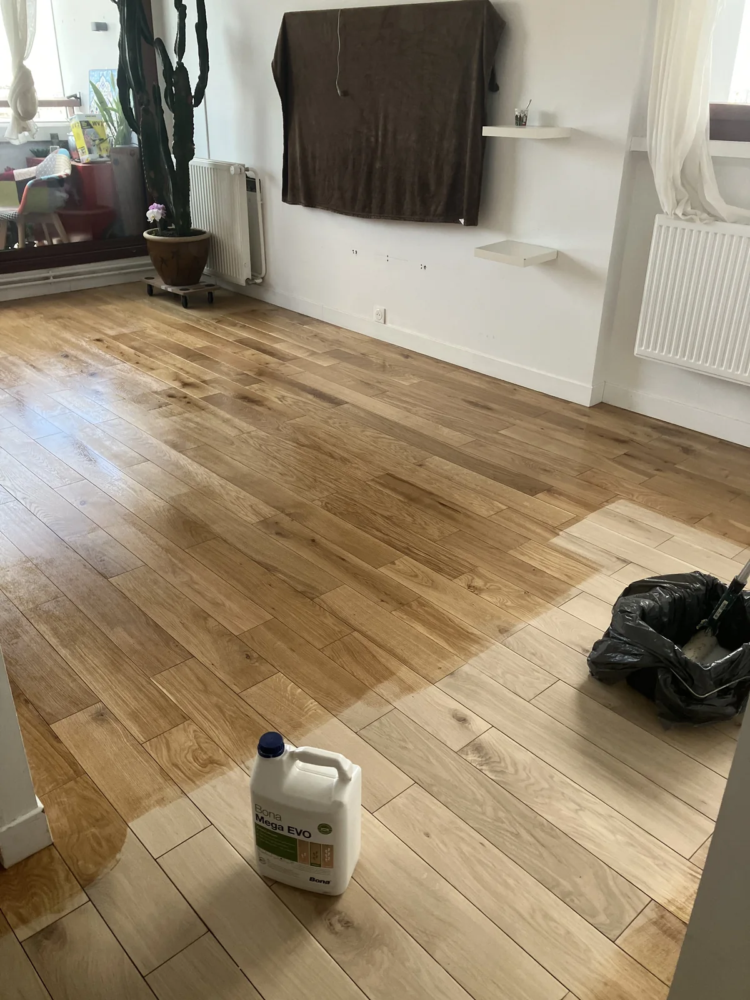
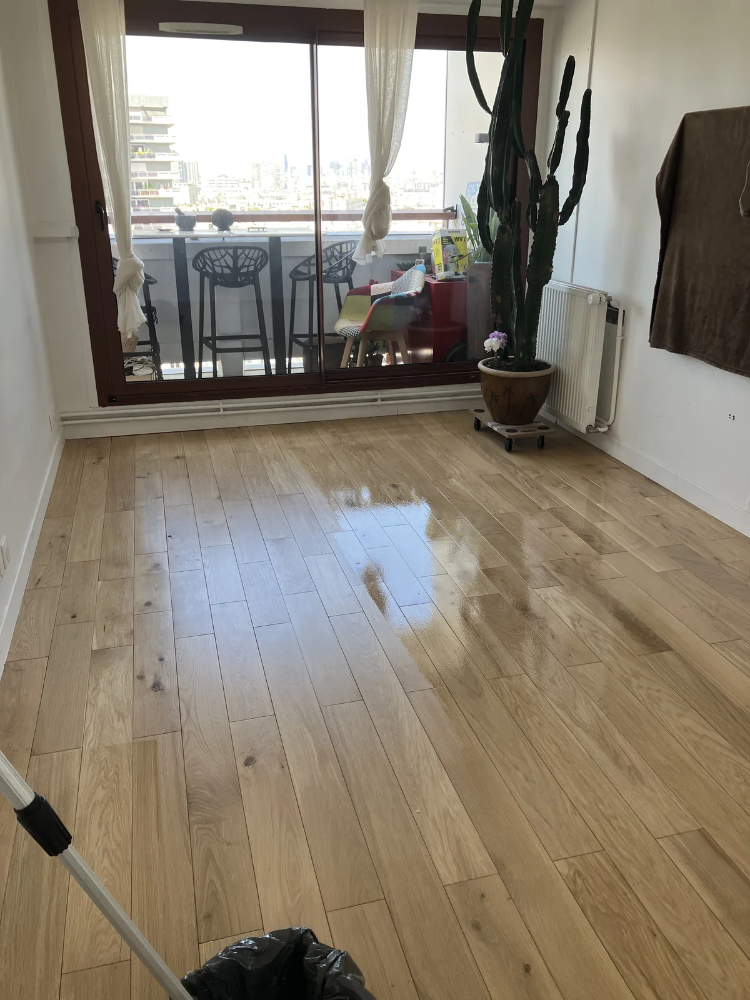
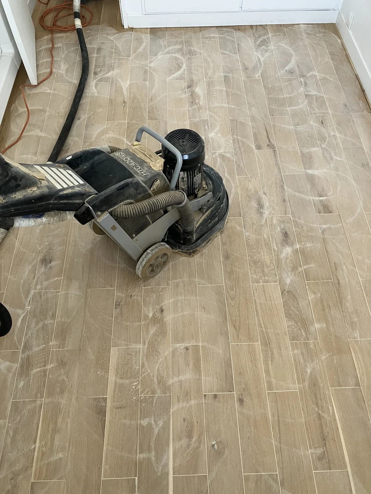

François Gaillard, artisan parqueteur indépendant, intervient à Montparnasse et dans tout le 14e arrondissement de Paris. Machine planétaire HTC Husqvarna, vernis Bona Mega Evo 3 couches. Tarif fixe 66 € TTC/m².
66€TTC/m² fixe
220+Avis Google 4,9/5
15Ans expérience
8hRéintégration
Ponçage et vitrification de parquet à Montparnasse
Montparnasse a une identité à part dans le 14e : quartier d'artistes dans les années 1920, aujourd'hui mélange d'immeubles haussmanniens autour du boulevard et de constructions plus récentes près de la tour. Les parquets anciens du quartier ont souvent traversé plusieurs générations de locataires — ateliers d'artistes reconvertis en appartements, rénovations successives.
Cette histoire mouvementée laisse des traces : couches de peinture ou de cire superposées, réparations artisanales d'époque. François Gaillard a l'habitude de ces parquets à l'historique complexe — le diagnostic sur photos permet d'anticiper si des réparations préalables (lattes, fissures) seront nécessaires avant le ponçage proprement dit.
Tarif fixe : 66 € TTC/m² — ponçage machine planétaire + vitrification Bona Mega Evo 3 couches + égrenage. Devis par SMS sur photos, sans déplacement. Réponse rapide.
Pourquoi choisir la machine planétaire à Montparnasse ?
Les parquets point de Hongrie et Versailles, très présents dans le 14e, nécessitent une machine planétaire HTC Husqvarna — ses 3 disques satellites travaillent simultanément dans toutes les directions, sans créer de marques directionnelles. La machine tambour classique est inadaptée pour ces motifs diagonaux.
L'aspiration centrale de la machine, couplée au Festool CTL 48 E à filtre HEPA, capte pratiquement toute la poussière à la source. Chantier propre, pratiquement sans poussière dans l'appartement.
Vitrification Bona Mega Evo — le meilleur pour votre parquet
3 couches systématiques avec égrenage entre la 1ère et la 2ème. Vernis à base aqueuse, non jaunissant, durée de vie 10 à 15 ans. Adapté aux foyers avec chiens, chats, bébés et personnes sensibles. Réintégration 8 heures après la dernière couche.
Un chantier réel à Montparnasse
Voici un chantier que j'ai réalisé dans le quartier : un séjour en chêne massif, taché et terni, poncé puis vitrifié au Bona Mega Evo. Photos prises pendant le travail, sans mise en scène.
Vidéo · L’égrenage
L’égrenage — le ponçage fin entre les couches
Après la première couche de Bona Mega Evo, le parquet est repassé à la machine avec un abrasif fin (grain 120). Ce ponçage léger élimine les fibres du bois redressées par le vernis et crée l’accroche nécessaire à la couche suivante. Sans égrenage, les couches n’adhèrent pas entre elles — c’est la cause n°1 d’un vernis qui pèle au bout de quelques années. Filmé sur le chantier de Montparnasse.

Étape 1
Le parquet à l'arrivée
Le chêne du séjour était marqué par des taches sombres et un vernis usé. La machine planétaire HTC 420 VS attaque la première passe — on voit déjà la différence entre la zone traitée et le reste.

Étape 2
Pourquoi une machine planétaire
Les disques tournent dans toutes les directions simultanément. Aucune marque directionnelle possible — contrairement à une ponceuse à tambour, qui laisserait des sillons visibles à vie.

Étape 3
Le bois mis à nu
Après plusieurs passes, le chêne est propre et uniforme. Les taches ont disparu : elles étaient dans le vernis et dans le premier millimètre de bois, pas plus profond.

Étape 4
Le séjour poncé
La pièce entière, prête pour la vitrification. Le chêne a retrouvé sa teinte naturelle, claire et mate.

Étape 5
Bona Mega Evo — le vernis
Le bidon est sur la photo, sans mise en scène : c'est le seul vernis que j'utilise. Base aqueuse, non jaunissant, certifié EMICODE EC1 et GREENGUARD Gold. Durée de vie 10 à 15 ans.

Étape 6
L'application
Le vernis frais est brillant et miroitant. Il mate en séchant selon la finition choisie. Séchage en surface : 2 heures.

Étape 7
Le résultat
Trois couches, égrenage entre la première et la deuxième. Réintégration 8 heures après la dernière couche. Comparez avec la première photo : c'est le même parquet.
66 € TTC/m² pour un chantier complet ponçage et vitrification 3 couches Bona Mega Evo. Tarif fixe identique dans tout Paris, y compris Montparnasse. Devis par SMS sur photos au 07 83 92 58 94.
François Gaillard, artisan parqueteur indépendant basé à Montrouge (92). Plus de 220 avis Google à 4,9/5. Il intervient dans tout le 14e arrondissement et tout Paris.
3 à 4 jours. François Gaillard ponce environ 20 m² par jour, vitrification 3 couches comprise. Réintégration 8 heures après la dernière couche de vernis.
Oui — la machine planétaire HTC Husqvarna travaille dans toutes les directions, sans marques directionnelles. C'est la machine indispensable pour les parquets diagonaux très présents dans le 14e.
Par SMS au 07 83 92 58 94 avec 3-4 photos du parquet, la surface, l'étage et si meublé ou non. Tarif fixe 66 € TTC/m², réponse rapide, pas de déplacement préalable.